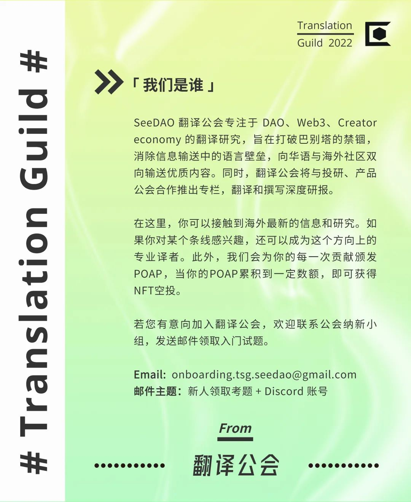

推荐语
有人说lil nouns是最符合V神定义的DAO形态，有人说lil nouns是文化符号。让我们忽视NFT的地板价，来看看它如何以100%链上操作的DAO形式运作。本文获奖Mirror Spotlight。
推荐语
“
关于 Lil Nouns 的一切：
基于 NFT 的共同治理
开始阅读之前，建议读者先熟悉加密货币、NFT、和 DAO 等概念。
见过这副眼镜吗？
nouns.wtf
如果在读这篇文章之前没有见过，那么很可能过不了多久你就会看到。
作为一项实验，Nouns.wtf 大约在一年前开始运作。而如今，它成了用 NFT 进行共同治理的最成功案例之一。
他们有个简单的座右铭：每日一 Noun，日日如此。
在持续 24 小时的拍卖中，每天都会诞生一个 Noun。每个拥有以太坊钱包的人都可以出价。上个月，每个 Noun 的平均价格是 108 ETH，约 11.8 万美元，行情十分不错。
拍卖所得的全部资金都存入一个由 Noun 持有者管理的公共金库，每个 Noun 都赋予持有者一个提案投票权；只要拥有至少 1 个 Noun ，任何人就都可以提交提案供 DAO 投票。
所有艺术品，假如遵循 CC0 协议就意味着不保留任何权利。你能够以任何方式免费使用 Nouns 眼镜及其特征，包括用于商业用途。
他们的主要目标很简单：让世界变得更 Noun 一些 !
⌐◨-◨
为此，他们正在资助各种很酷的点子，从发布奢侈品眼镜和滑板到为慈善机构捐款、拍摄纪录片，还有为 Web3 创建公共基础设施等。
他们的想法可谓天马行空，甚至连天空也不拦不住他们。
但正如标题所述，我们今天并不是要谈论 Nouns，而是要聊聊 Lil Nouns。100 多 ETH 的入门价格，Nouns 对大多数人来说遥不可及，所以 Lil Nouns 诞生了！
lilnouns.wtf
“
一个故事：
Lilnouns 是什么，又是如何启动的？
Lil Nouns 是一个基于 Nouns 的扩展 DAO，你可以把它想象成 Nouns 的孩子。对大多数人来说 Nouns 太过昂贵，于是 Lil Nouns 来解决这个问题，提供一个更易于接受的切入点。
2022 年 5 月 10 日，首拍开始：
和 Nouns 每日一拍不同，新的 Lil Noun 拍卖将永远保持每 15 分钟举行一次。过去的一个月里，每个 Lil nouns 的平均价格是 0.3 ETH，约合 330 美金。
你明白是怎么回事儿了吧？
其它所有部分则延续了 Nouns 的运作模式，拍卖所得的 ETH 将汇入一个由 Lil Nouns 所有者管理的公共金库。
这个项目开始时得到了许多 Nouns 所有者的支持，但现在社区正在以不同的方式发展，引入了更多原先不在 Nouns DAO 内的人。
相信现在你对 Nouns 和 Lil Nouns 是什么已经有了很好的了解，然而，这一切有什么目的呢？
“
目标：
社区的主要价值观
＂Nouns 眼镜就像是 Web3 的 NIKE 标志＂
- 无名氏
关于支配 Nouns 社区的主要价值观并无共识，但在所有参与者中有一件事是获得公认的，即：他们想要「Noun化」这个世界，要让它更 Noun 一些。
然而，什么是「Noun 一些」?
总的来说，大家一致同意它代表着：任何人都能作出贡献，能一起进行建设，都能支持公共物品，从而让这个世界更加美好。
依我看 crypto_tron#0705 在 Lil Nouns 的 Discord 里说的非常好，可以当作我们的座右铭：
＂信任一个无需信任的世界＂
- crypto_tron#0705
我们看到的，是迄今为止 DAO 治理方面最成功的实验——建立了一个充满激情的社区，资助最疯狂的想法，并且对所有人开放，任其所能成为贡献者。它形成了一个有趣的正反馈：获得资助的提案为 Nouns 生态带来了更多的关注，从而培育了一个更大的社区，接着更多的人决定加入该项目并做出贡献…… Blowned.eth#5048 说得好：CC0 文化 + 治理实验 + 包容性──这就是 Nouns。
“
如何将你的想法变成现实？
目前要获得 Lil Nouns DAO 的资助有三个主要渠道：prop.house、Lil Grants 和链上投票。
让我们来分别看一下：
提案屋：Prop House
Nouns 有一个很酷的问题。每天他们都有更多的 ETH 入账，为不同的想法分配资金不是什么难事。于是他们想出了个好办法来资助小型项目，既不用问太多的问题，也不需要让整件事情过于困难。
「提案屋」：prop.house
「提案屋」：prop.house
Lil Nouns 也有自己的「提案屋」。
机制很简单：提案屋由多轮构成，某个时间段内（一般是7天）你可以提交自己的提案，接下来的 7 天开放投票。每个有以太坊钱包的人都可以提交一个想法，每位 Lil Noun 持有者则可以选择他们喜欢的想法，一枚 Lil Noun NFT 等于一票。
每一轮都将产生一定数量的获胜者和总奖金，第 1 轮有 5 个获胜者，每人可获得 2 ETH；第 2 轮有 11 名获胜者，每人可获得 1 ETH；第 3 轮将选出 3 个项目，每个项目将获得 3 ETH。
如果你的提案是该轮投票中得票最多的，你将赢得 ETH 并可将提案付诸实施。
趣闻一则：本文获得了「提案屋」的资助，并且是第 2 轮得票最多的项目。
建议你去提案屋网站查看过去几轮的提案！这是实现自己想法最简单的方式。社区非常开放，提交之前，你也可以在 discord 上与大家一同讨论提案。
让我们看看其他的渠道……
Lil 募资
也许出于某种原因，你的想法不适合在提案屋里提出，或是你需要的金额跟目前这轮能提供的不同，或者你想换个节奏来做事。
那么 Lil 募资或许会成为你的选择。向 Lil 募资提交想法的主要方式是使用 discourse 论坛，但发帖之前，你还是可以先在 Discord 里进行讨论。有个叫 #lil-grants 的频道正是做这个用的，该频道对所有人都开放，即使你没有 Lil Noun。
实际上，通过提供捐赠，你甚至可以获得自己的第一个 Lil Noun，变成社区的一份子。
我们有各种各样的想法：Dune 分析看板、德语社区 NounsDACH、新闻邮件、播客和 gif。
链上投票
更大的提案通常在 Discord 上讨论并进行链上投票。
你可以访问 lilnouns.wtf 查看所有链上投票的提案
除了创意性的想法之外，链上投票对于决定协议变更和涉及 Lil Nouns 未来的重要事项也很有帮助。
尽管不是硬性要求，提交链上提案至少需要 4 个 Lil Noun，大多数链上提案所需要的资金都大于 10 ETH。
让我们看看到目前为止的投票和执行的内容。
已执行的链上提案
Lil Nouns 社区的目标之一是成为最大的 Nouns 持有者。到目前为止，他们已经通过 4、10、17、19 和 21 号提案购买了 5 个 Noun，27号提案 也已通过批准并且正在排队购买 Lil Nouns 社区的第六个 Noun NFT。
另一些已通过的提案包括：用 15 ETH 资助提案屋的前三轮提案（与来自 Nouns DAO 的另外 15 个 ETH 相匹配），用 20 ETH 为学生提供 3,000 个水净化教育套件和工作坊，购买 lilnouns.eth 域名以及为 DAO 的项目经理和核心贡献者 lilal409 提供住所。
这还只是才开了个头，我确信大家还会看到这里诞生出更棒的项目。
也许下一个链上投票的就是你的提案？
“
如何作出贡献：
加入这场动议
在了解以上这些之后，主要问题是：
你打算创造点什么❔
这一运动最美妙的地方之一就是，加入它没有门槛，也没有什么大的障碍，它对任何人都敞开大门。来吧，走进 discord 和社区成员聊聊天，去看看论坛上的讨论，记住：奇思妙想来者不拒。回见！
撤啦！👋
链接和资源：
Lil Nouns 项目网站：lilnouns.wtf
Discords:Lil Nouns discordNouns discord
Big Nouns 项目网站：nouns.wtf
关于 Nouns 的历史，请查看：
https://lostnouns.wtf/https://nouns.center/history
Dune 数据分析看板：Lil NounsNouns
其它文章：llama.mirror.xyz
THE END
